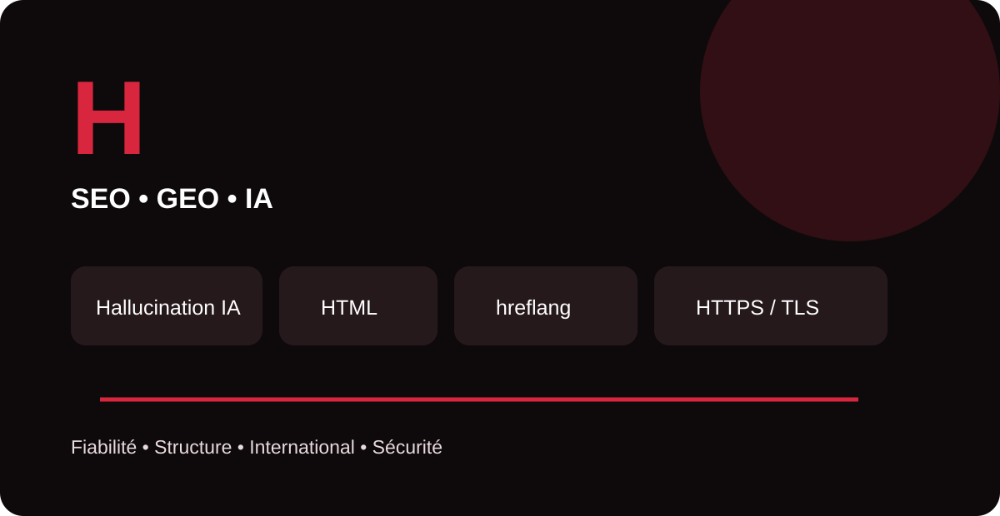

Le référencement moderne ne se limite plus aux mots-clés. Il repose aussi sur une base technique fiable, une architecture compréhensible par les moteurs et, avec l’essor des assistants génératifs, une vigilance accrue sur la fiabilité de l’information. Ce guide MinoSeo explique quatre notions en H avec une approche pratique, claire et orientée SEO/GEO.

Hallucination IA
Une hallucination IA, aussi appelée confabulation, correspond à une réponse générée qui contient une information fausse, inventée ou inexacte tout en pouvant paraître crédible. Les modèles génératifs produisent leurs réponses à partir de mécanismes statistiques : une formulation fluide n’est donc pas une garantie d’exactitude.
En GEO, l’enjeu est important : une marque doit rendre ses informations essentielles faciles à vérifier et cohérentes entre ses pages, ses profils et ses sources de référence. Dates, chiffres, noms de services, coordonnées et preuves d’expertise méritent une attention particulière.
HTML
Le HTML (HyperText Markup Language) est le langage de balisage qui structure le contenu d’une page web. Titres, paragraphes, liens, images, listes et zones sémantiques sont décrits par des éléments HTML que les navigateurs et les robots peuvent interpréter.
En SEO, un HTML propre facilite la compréhension du contenu : un H1 cohérent, une hiérarchie H2/H3 logique, des liens descriptifs, des attributs alt utiles et des éléments sémantiques bien employés améliorent la lisibilité technique. Le HTML n’est pas une “astuce SEO” : c’est la fondation documentaire sur laquelle reposent de nombreuses optimisations.
Votre structure technique aide-t-elle vraiment votre visibilité ?
MinoSeo peut auditer le HTML, l’indexabilité, le maillage et les signaux techniques de votre site afin d’identifier les optimisations SEO/GEO prioritaires.
Demander un audit MinoSeohreflang
L’attribut hreflang sert à signaler aux moteurs les différentes versions linguistiques ou régionales d’un même contenu. Il aide notamment Google à proposer une URL adaptée à la langue ou à la zone géographique de l’internaute.
Une implémentation solide exige des URL complètes et des annotations réciproques : chaque version doit référencer les autres variantes pertinentes, y compris elle-même. La valeur x-default peut servir de solution de repli pour les utilisateurs ne correspondant pas aux langues explicitement ciblées.
Le hreflang ne remplace ni la traduction réelle du contenu ni une architecture internationale cohérente. Une erreur de code langue/région ou l’absence de liens de retour peut empêcher les annotations d’être correctement prises en compte.
HTTPS certificats
HTTPS est la version sécurisée du protocole HTTP. Il chiffre les échanges entre le navigateur et le serveur grâce à TLS. Le certificat numérique permet notamment au navigateur de vérifier l’identité du domaine présenté lors de l’établissement de la connexion sécurisée.
Pour un site professionnel, HTTPS protège les données en transit, renforce la confiance et fait partie des fondamentaux d’une bonne expérience web. Il faut surveiller la validité du certificat, éviter le contenu mixte et rediriger proprement les anciennes URL HTTP vers leurs équivalents HTTPS.
Les notions en H à retenir
| Terme | Rôle principal | Point de vigilance |
|---|---|---|
| Hallucination IA | Comprendre les limites factuelles des systèmes génératifs | Vérifier les faits et renforcer la cohérence des sources |
| HTML | Structurer le contenu d’une page | Conserver une hiérarchie sémantique claire |
| hreflang | Relier les variantes linguistiques ou régionales | Codes corrects et liens réciproques |
| HTTPS | Sécuriser les échanges navigateur–serveur | Certificat valide, redirections et absence de contenu mixte |
Ces quatre notions montrent à quel point le SEO et le GEO associent désormais contenu, technique, internationalisation et fiabilité. MinoSeo accompagne les entreprises dans l’audit SEO/GEO, l’optimisation technique et la structuration des contenus afin de construire une visibilité durable sur les moteurs de recherche et les environnements alimentés par l’IA.
Construisez une visibilité techniquement solide et compréhensible par l’IA
Faites analyser votre site et identifiez les leviers SEO/GEO à prioriser selon vos objectifs.
Demander un audit gratuit